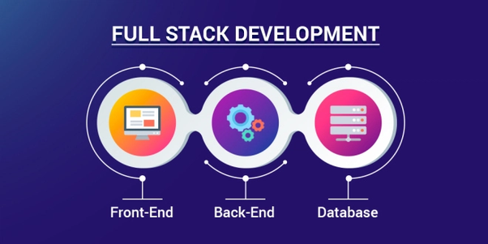

My name is Roberto Ruiz-Duarte and I am a self taught software developer.
I am originally from Madrid, Spain; but I have lived for the last 8 years in the UK, specifically in Bromley just outside London. I have the settled status.
I decided to change my career after many years of jumping from job to job unhappy, deciding to learn Softwate development, and I have to say I have never been happier. I really enjoy working with code seeing what else can I build.
I had my first computer in 1989. My father bought an IBM 8086 to work at the office and I was fascinated with all the possibilities that machine was offering, to be honest, I had watched the film War Games and I was expecting to become a hacker like in the movie. But I ended up filling up invoices and budgets for my father's business. On those days I learnt MS-DOS which now, is good to use the terminal.
My first attempt with programming was with Basic language, but I didn't go further that making some music.
Fast forward I tried again learning on my own in 2012, online courses weren't yet that mainstream and I couldn't afford a bootcamp, I didn't even know about bootcamps or if there were any at that time. This time I try with the Java language using the Eclipse IDE, but being on my own without anyone to ask when I got stuck was mining my moral and I ended up ditching the idea again. Until last year.
Online platforms like Udemy of Freecodecamp.org have made courses available to everyone and I saw my opportunity to finally invest my energy doing something that I have been pursuing for a long time. For the last year I studied website development and Javascript among other courses. I had access to tons of information, even being able to access a course at Harvard University called CS50 about computer science.
I code everyday, I try to learn everyday something new and I an determined to become a great developer, so my next step is to gain professional experience where to apply what I already know and where to learn how is to really work as a developer. I am ready for the opportunity and willing to learn everything I need to exceed at my job
I would say that I am more incline to the front-end but I am interested in the whole process of development, which includes the back-end. As a professional developer I believe it is important to have at least some knowledge of the whole process.
And to conclude,on the personal side, I became recently a parent of a baby boy, which I enjoy very much, but it is keeping awake often, so I use my extra time awake to push some code along the night. I love films too, and I try to travel every year to Spain and Italy to visit our family and have a good time with them and with our friends. I hope this gives you an idea of who I am and if you like to know more, just let me know. Thank you if you read until the end.
